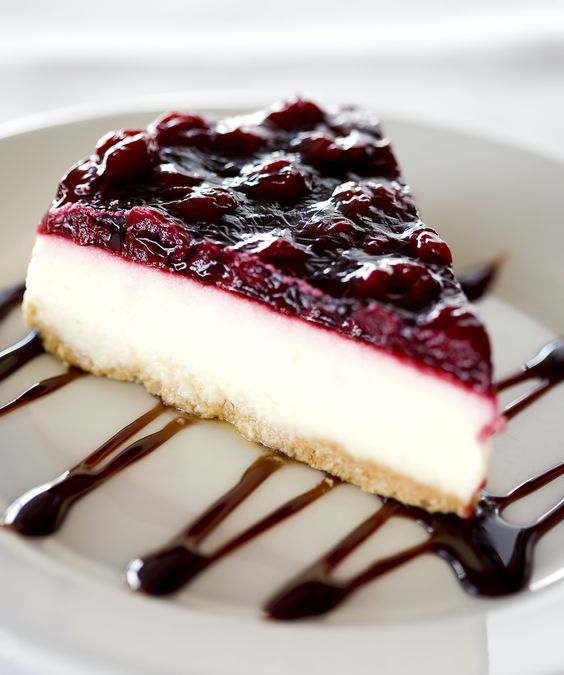

Receta Cheesecake Casero
El cheesecake es un postre delicioso que combina la cremosidad del queso con la dulzura de una base de galletas. Esta receta rápida y fácil es perfecta para quienes buscan un postre elegante sin complicarse demasiado en la cocina.
Tiene sus orígenes en la antigua Grecia, pero su popularidad se extendió a lo largo de los siglos hasta convertirse en un clásico de la repostería internacional. Con diversas variaciones en todo el mundo, la versión más conocida es la americana, que se caracteriza por su textura suave y su base crujiente de galletas. Es ideal para cualquier ocasión especial y se puede acompañar con frutas frescas, salsas de frutas o simplemente disfrutarlo solo.
Tiempo de Preparación
Para esta receta rápida y sencilla de cheesecake, necesitarás aproximadamente 3 horas y 15 minutos en total. Este tiempo incluye:
- 15 minutos para preparar la base de galletas y la mezcla de queso.
- 1 hora para hornear el cheesecake.
- 2 horas para enfriarlo en el refrigerador antes de servir.
Ingredientes
- 200 gramos de galletas de vainilla.
- 100 gramos de mantequilla derretida.
- 600 gramos de queso crema a temperatura ambiente.
- 200 gramos de azúcar.
- 200 ml de crema de leche.
- 3 huevos.
- 1 cucharada de esencia de vainilla.
- Ralladura de un limón (opcional).
Preparación:
- Precalienta el horno a 180°C.
- Tritura las galletas hasta obtener un polvo fino, luego se mezcla las galletas trituradas con la mantequilla derretida hasta formar una masa homogénea.
- Presiona la mezcla de galletas en el fondo de un molde desmontable de 22 cm, cubriendo bien toda la base. Reservar en el refrigerador o heladera mientras preparas el relleno.
- En un bol grande, bate el queso crema con el azúcar hasta obtener una mezcla suave y sin grumos.
- Añade la crema de leche, los huevos uno a uno, la esencia de vainilla y la ralladura de limón (si la usas), mezclando bien después de cada adición.
- Vierte la mezcla de queso sobre la base de galletas en el molde.
- Hornea durante aproximadamente 1 hora o hasta que el centro del cheesecake esté casi cuajado (se debe mover ligeramente al agitarlo).
- Apagar el horno y deja el cheesecake dentro con la puerta entreabierta durante 1 hora para evitar que se agriete.
- Retirarlo del horno y deja enfriar a temperatura ambiente.
- Refrigera el cheesecake durante al menos 2 horas antes de desmoldar y servir. Se pueden agregar frutas por encima para decorar o bañar con mermelada de cítricos o frutos rojos.